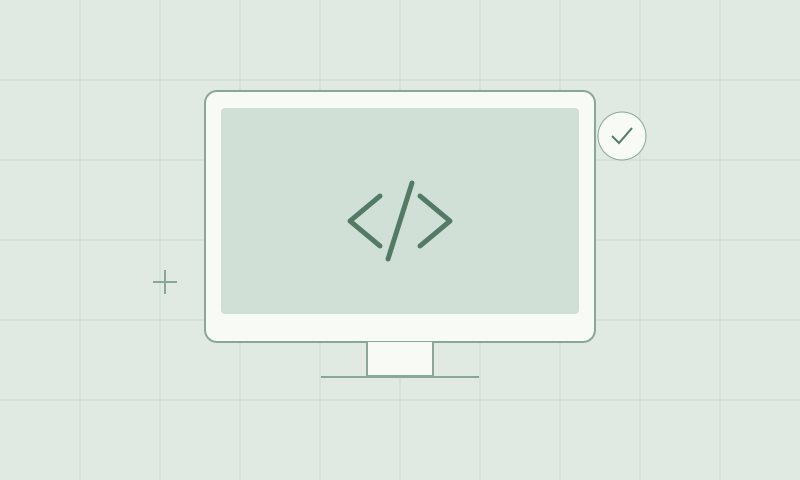

Work photo / screenshot[Your IT case study title]
[Introduce a real technical problem you helped solve and who it affected.]
Read the case study
The problem
[What was happening? Who needed help, and why did it matter?]
What I did
[Explain your own role, the steps you took, and the skills you used.]
What it meant
[Describe the outcome and its value to the people involved. Include a real result if you have one.]